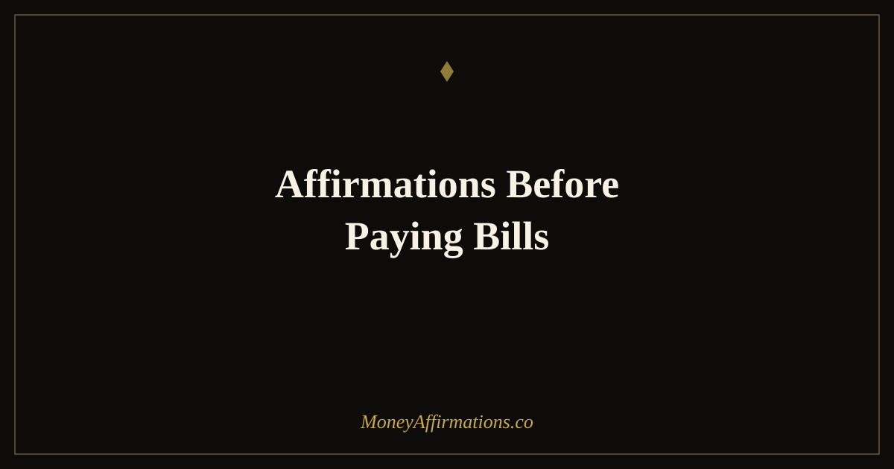

50 Affirmations Before Paying Bills to Replace Anxiety With Gratitude

Paying bills is one of the most financially charged moments in ordinary life — and one of the least supported. Nobody talks about the tightness in the chest before opening a banking app to schedule payments, or the way the total seems to shrink the moment the outflow begins. For many people, bill-paying day is when financial anxiety peaks, regardless of how much money is actually in the account.
These 50 affirmations move through five emotional stages: acknowledging the anxiety, reframing what each bill represents, building a sense of financial control, embracing the natural flow of money, and finally arriving at completion and relief. You don't have to use all 50 at once — find the group that matches where you are today and stay there. The goal is not to suppress the discomfort but to move through it with intention, so that bill-paying becomes something you do from a grounded place rather than a fearful one.
What are bill-paying affirmations?
Bill-paying affirmations are intentional statements used at the specific moment of financial outflow to interrupt the anxiety response and redirect your mind toward sufficiency, gratitude, and empowerment. Unlike general money affirmations practiced in the morning, these are designed for a moment that carries real emotional charge — and that edge is exactly what makes them effective when used correctly.
The act of money leaving your account triggers a negativity bias response in the brain — an instinctive protective reaction that evolution built in when losing resources meant real danger. Affirmations practiced at this moment don't override that biology, but they do give the thinking mind a competing narrative to engage with. Over time, with consistent practice, the emotional response to bill-paying softens — not because the bills disappear but because your relationship with the act itself changes.
50 affirmations before paying bills
Move through these groups in order for the full emotional reset — from acknowledging the stress, through gratitude, to completion. Or use whichever group matches where you are right now.
For the fear and scarcity that bills trigger (1–10)
- I notice the anxiety I feel right now and I allow it to be here without shame.
- My nervous system is responding to money stress, and I am safe in this moment.
- Fear around bills is common, understandable, and not a sign that I am failing.
- I breathe through this feeling and let it move without controlling me.
- I have faced financial moments like this before and I have always moved forward.
- The anxiety I feel is not evidence of lack — it is evidence that I care about my finances.
- I am bigger than this worry, and I handle what is in front of me with calm.
- I release the story that money going out means I am running out.
- Paying bills is an act of responsibility and I am capable of it right now.
- I soften the grip of scarcity thinking and make space for a more grounded response.
Gratitude reframe — what each bill represents (11–20)
- My electricity bill is proof that I live in warmth and light — I am grateful.
- My rent or mortgage means I have a home, a place of safety — I receive this with thanks.
- My internet bill represents connection, opportunity, and access — I value this deeply.
- My grocery bill is evidence that I feed myself and those I love — this is abundance.
- My insurance payments mean I am protected when life is unpredictable — I am grateful for that security.
- Every bill I pay is tied to a service that supports my life — and I acknowledge that today.
- These payments are not losses — they are investments in the life I am actively living.
- I see my bills as receipts for a life that works, not as punishments for existing.
- I am grateful to have the means to meet these obligations today.
- Paying bills is how I say thank you to every service and system that supports me.
For financial empowerment and control (21–30)
- I manage my money with awareness, care, and confidence.
- I meet my financial obligations because I am a responsible and capable adult.
- I am in control of my finances — not the other way around.
- I approach bill-paying with clarity, not chaos, because I know my numbers.
- Every time I pay a bill on time, I strengthen my financial foundation.
- I handle money matters with the same competence I bring to everything else in my life.
- I review my statements clearly, make decisions confidently, and move forward with ease.
- Financial responsibility feels empowering, not draining, because I choose to show up for it.
- I am building a reputation with myself as someone who handles their money well.
- Taking care of my obligations today creates the financial peace I want tomorrow.
For the flow of money — in and out (31–40)
- Money flows in and out of my life in a healthy, natural rhythm.
- Every dollar that goes out creates space for more to flow in.
- I trust the circulation of money — outflow is as natural as inflow.
- Money is not meant to be hoarded; it is meant to move, and I allow that movement with ease.
- Releasing money for what I need is not losing — it is participating in abundance.
- I release scarcity thinking and trust that my needs are always met.
- The money I send out today returns to me in new forms and new opportunities.
- I am a clear and willing channel for money to move through, in both directions.
- Financial flow is healthy, and I maintain a strong and open flow in my life.
- What I release today with gratitude comes back to me multiplied.
After you've paid — completion and relief (41–50)
- I have met my obligations and I feel the quiet satisfaction of that.
- My bills are paid and my financial life is in order — I take a moment to acknowledge this.
- I feel lighter now that this is done, and I carry that lightness forward.
- I am proud of myself for showing up for my finances today.
- This is complete. I release any lingering stress and move into the rest of my day with peace.
- Every time I close out my bills, I reinforce that I am someone who handles money well.
- Done. Clear. Grounded. My financial slate for this cycle is settled.
- I release all tension from this process and let my body relax into a sense of accomplishment.
- My bills are not a burden — they are a measure of the life I have built, and that life is worth maintaining.
- I face my finances with courage and I end this session with confidence in myself.
How to use these affirmations
The five groups are designed to be used in sequence, mirroring the emotional arc of bill-paying. Begin with group one even if you don't feel particularly anxious — acknowledging the possibility of anxiety without experiencing it is still a useful reset. Move through groups two and three to build the reframe and empowerment layer, then use groups four and five as you actually complete the payments and close the session.
If anxiety is high before you even start, spend five minutes with group one only. Read each affirmation aloud, pause after each one, and breathe. You are not trying to fake gratitude — you are offering your nervous system a different signal from the one it's already generating. One slower breath after each statement is enough.
If you struggle with bill-paying anxiety related to financial stress, these affirmations work best alongside practical money management support. Affirmations for money anxiety — including those specifically addressing the fear spiral — can help build the foundational calm that makes bill-paying feel more manageable over time. Some people also find that scheduling all bill payments on a single day creates a clear boundary around financial stress rather than letting it bleed into the whole week.
Consistency across several billing cycles is more important than intensity in a single session. Even two minutes with two or three affirmations done every bill-paying day will, over a month, create a measurably different emotional response to the act.
Why bills cause such strong anxiety — and the cognitive reframe that changes everything
Understanding why bill-paying triggers stress does not immediately remove the stress — but it does reduce the shame around having it, and shame is one of the main things that keeps the anxiety entrenched.
The most fundamental driver is negativity bias: the brain's evolutionary tendency to weight losses more heavily than equivalent gains. Research by Kahneman and Tversky established that losses feel roughly twice as powerful as gains of the same size. When you see money leave your account, the brain registers it as a loss event and activates a mild threat response — the same system that evolved to protect against predators and famine. This is not irrational; it is biology. But it is calibrated for an environment far more dangerous than modern bill-paying.
The physical expression of this is well-documented. Studies on financial stress and cortisol show that even anticipated financial outflow — just thinking about paying bills — elevates cortisol levels in some individuals, triggering the physical symptoms of stress: tight chest, shallow breathing, reduced concentration. This happens before a single dollar leaves the account.
Cognitive reframing, developed by Aaron Beck in cognitive therapy, offers the most evidence-based path through this. The technique does not deny the reality of the stress; it examines the story the brain is telling about it. "I'm running out of money" is a thought, not a fact. "This bill means I have heat in my home" is also a thought — and it is more accurate and less threatening. Over time, replacing the automatic scarcity interpretation with a sufficiency interpretation changes the emotional response at the neurological level.
Lynne Twist's concept of the scarcity mindset versus sufficiency mindset is relevant here too. Scarcity thinking is not about how much money you have — it is a mental posture of never-enough that persists regardless of income. Sufficiency is not the same as excess; it is the recognition that you have what you need right now. The gratitude reframe group in these affirmations is built entirely on this principle: each bill is evidence of something you already have.
Tips to make them work faster
- Name the specific bill: Rather than reading generic affirmations, substitute the actual bill name in real time. "My electricity bill is proof that I live in warmth and light" lands harder than a vague statement about outflow when you're looking at the real number.
- Use before and after: Bookend your bill-paying session — two affirmations from the fear group before you start, and two from the completion group when you're done. This creates a psychological open-and-close ritual that contains the stress rather than letting it linger.
- Breathe first: Three slow breaths before the first affirmation shift your nervous system from sympathetic (fight/flight) toward parasympathetic (rest/digest). Affirmations delivered to a calmer nervous system are absorbed more effectively — the breath is not a formality.
- Track the shift: Rate your anxiety from 1–10 before you start and again when you close the session for three consecutive bill-paying days. Tracking creates observable evidence of progress, which reinforces the practice far more than faith in the affirmations alone.
- Don't skip the completion group: Many people abandon the practice once the payments are made. The completion affirmations are the ones that build long-term confidence — they teach the brain to associate bill-paying with a feeling of accomplishment rather than a feeling of depletion. Stay for those ten.
Frequently asked questions
Is it normal to feel anxious before paying bills even when I have enough money?
Completely normal — and more common than most people admit. Financial anxiety is not always proportional to actual financial stress. Research shows that people across all income levels experience bill-paying anxiety because the act of paying is a salient reminder of money leaving rather than arriving. The brain registers the outflow as a loss event, which activates the same negativity bias that evolved to protect us from real physical threats. Having enough money does not automatically silence that response — but deliberate practices like affirmations can gradually recalibrate it.
How do I use affirmations when the bills genuinely feel overwhelming?
Start with group one — the fear and scarcity affirmations — and stay there as long as needed before moving forward. These are written for exactly the moment when the anxiety is real and present. Do not force yourself to gratitude before you have acknowledged the fear; that bypass creates inner resistance and makes affirmations feel hollow. Say the first group aloud, let yourself breathe, and notice any slight shift. A small reduction in physical tension is enough to continue. If the situation is genuinely overwhelming financially rather than just emotionally, consider pairing affirmations with practical support from a nonprofit credit counselor or financial coach.
Can changing how I think about bills actually improve my financial situation?
Indirectly, yes — and the mechanism is well-documented. Chronic financial stress impairs prefrontal cortex function, the part of the brain responsible for planning, decision-making, and impulse control — exactly the capacities you need to manage money well. Research by Mullainathan and Shafir showed that the cognitive load of financial worry measurably reduces available mental bandwidth. Reducing anxiety around bills through affirmations and reframing frees up cognitive resources for better financial decisions — more careful review of statements, willingness to negotiate rates, and ability to plan ahead. The mindset shift is not magic; it clears the way for the practical actions that improve your situation.
If bill-paying anxiety is part of a wider pattern of financial stress, the money affirmations collection offers a full range of daily practices to build resilience, confidence, and a healthier relationship with money over time.